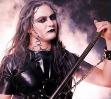
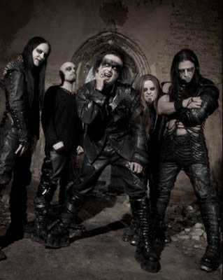

Entrevista
de Martin Powell à Júlio César Bocáter
- Rock Underground - Setembro de 2004
Fale sobre
o último álbum, Nymphetamine.
É sem dúvida nosso melhor
disco! O título é bem sacado, um misto de ninfo
com anfetamina e é essa a sensação ao ouvir
Nymphetamine. Ele é mais básico, apesar
de complexo no instrumental e de tocarmos cada vez melhor a
cada disco, ele é mais direto, mais pesado, sem as orquestrações
que fizemos no disco anterior, Damnation And A Day.
Justamente
sobre Damnation And A Day seria minha próxima
pergunta, pois já é um dos discos mais emblemáticos
e polêmicos da história do Metal! Gostaria que
você falasse sobre ele também, pois foi o primeiro,
o único e último disco de Black Metal lançado
por uma gravadora major, a Sony Music e é um dos discos
com produção mais cara que o Metal já teve,
além da orquestra!
Somos muito felizes por termos feito um
álbum como Damnation And A Day. Temos muito
orgulho dele, realmente um marco na história do Black
Metal! Sim, você está certo, ele deve ser o primeiro
disco de Black Metal a ser lançado por uma major. Foi
por esse fato que ele saiu deste jeito, pois jamais tivemos
tanto dinheiro disponível para uma produção
nossa! Seria a única oportunidade que teríamos
em ter tanto suporte financeiro, então aproveitamos e
chegamos no extremo de experimentações e de orquestração,
pois nunca um disco de Metal teve tantos músicos de orquestra
em um disco! Outras bandas que se valem de fazer Metal sinfônico,
como Therion
e Dimmu Borgir, que conseguem bom suporte de suas gravadoras,
ainda sim tem dificuldades em fazer tudo, coisa que com uma
major pode conseguir muito mais fácil. Como tínhamos
quase certeza de que seria o único disco nosso pela Sony...
(Interrompendo)
Justamente isso que ia abordar, como chegaram a Sony e por que
saíram tão logo?
Bem, nosso contrato com eles era para
apenas um disco. Tanto nós como a gravadora decidimos
fazer isso, pois seria uma experiência sem precedentes.
Quando estávamos sem gravadora, fomos convidados por
eles. A Sony viu que o Metal estava voltando com tudo e como
eles tem o Ozzy em seu cast e algumas bandas de New Metal, eles
queriam ver o que acontecia com o Black, que pudesse realmente
haver um boom do estilo...
(Interrompendo
de novo) E justamente esta era a torcida da maioria das pessoas
do meio, para que abrisse um nicho de mercado para o Black ter
uma propagação ainda maior!
Nós também pensamos nisso. Somos os pioneiros
neste negócio de Black Sinfônico, e fomos os pioneiros
em abrir mais o estilo. Só que nem tudo ocorreu como
planejávamos, pois as pessoas lá não entendem
quase nada de Metal, muito menos ainda de Black Metal. O disco
vendeu bem, mais ou menos como todos nossos anteriores lançados
por selos menores. Esta vendagem é excelente para selos
especializados, mas pouca para a Sony. Eles nos procuraram,
nos disseram que o nosso custo foi muito alto para o retorno
que tivemos, que com outros artistas de New Metal e Pop eles
gastavam muito menos e vendiam muito mais. Nos ofereceram um
segundo disco, mas com uma produção bem menor
do que tínhamos no começo da carreira, e nós
recusamos e saímos! Outra coisa que sofremos foi com
os downloads. Quando estávamos em selos menores, tínhamos
menos problemas com isso do que quando estivemos na Sony. Parece
que as pessoas querem mesmo f.... com as grandes gravadoras!
(risos)
Agora vocês
estão na Roadrunner, como avalia esta situação
atual?
A melhor de nossa carreira! A Roadrunner
é o maior selo especializado em Metal no mundo! Eles
tem bandas como Machine Head, Slipknot, e foram responsáveis
por muitas bandas serem grandes, como Deicide, King Diamond
e Sepultura. Todas as pessoas que trabalham lá entendem
de Metal, 100 vezes mais que na Sony, então estamos no
caminho certo! Mas temos outra coisa boa para falar da Sony,
que eles nos deram liberdade total para fazermos nossa música,
eles não influenciaram em nada, como muitos temiam.
Os leitores
podem até estranhar a gente estar falando esse lance
de gravadoras, mas isso é muito importante para uma banda,
ainda mais do porte do COF. E ainda mais todas estas mudanças,
em que muitas bandas encerram a carreira por causa destes transtornos,
e me parece que nestas mudanças, o COF se deu bem! Vocês
souberam "usar" as gravadoras!
Você tem razão! E no caso,
a Roadrunner vai pegar o vácuo da Sony, que nos ajudou
a aumentar nosso nome nos EUA. Na Europa não tivemos
diferença, mas nos EUA nós crescemos muito! E
agora é o momento adequado!
Falando
ainda em gravadoras (risos), é a primeira vez que vocês
chegam num grande selo especializado em Metal! Antigamente,
vocês vinham de selos bem pequenos, por que vocês
nunca estiveram sem selos grandes como Metal Blade, Century
Media, Nuclear Blast, etc?
Isto foi intencional, pois sempre preferimos
estar em selos menores e sermos a prioridade do que estarmos
em um selo maior e sermos a quinta ou sexta banda. Agora, na
Roadrunner, que é um selo bem maior do que os que estivemos
antes, aceitamos estar com eles porque nos colocaram como prioridade!
O Dany Filth
é uma pessoa difícil de se trabalhar?
(risos) Todos me perguntam isso, e é
engraçado, pois é a pessoa mais fácil de
se trabalhar! Ele tem toda aquela imagem que ele passa, pelo
visual e por tantas lendas criadas, mas não tem nada
a ver!
Todos levam
a pensar isso, pois o Cradle vive mudando de formação...
(Interrompendo) Isso acontece, não
pelo Dany, mas pelos próprios músicos que saem.
O Cradle começou como uma banda pequena, mas promissora,
e que cresceu muito a cada disco. Neste tempo, muitos músicos
tocavam apenas por hobby e tinham seus empregos fixos e família
e não podiam acompanhar o crescimento da banda, e outros
entraram pensando em glamour, sem noção do que
é estar em uma banda de Black Metal, por maior que ela
seja!
O Dany é
o dono da banda? Pois nas fotos promocionais, só ele
aparece em nome da banda.
Mais ou menos, ele é o líder,
e natural que apareça mais do que todos nós. Só
isso.
Existe rivalidade
entre vocês e o Dimmu Borgir? Pois sempre quando se fala
de Black Melódico e sinfônico, sempre é
citado o Cradle e o Dimmu.
Não, pois as duas bandas são
totalmente diferentes, públicos diferentes, gravadoras
diferentes, então, não tem como haver rivalidade.
Mande uma
mensagem para o fãs brasileiros (a entrevista foi feita
dias antes do show deles em SP).
Esperem por nós, iremos detonar
tudo por aí! Ouvimos falar que vocês são
os melhores do mundo, e estamos ansiosos por isso!
Extraída
de www.rockunderground-mag.com